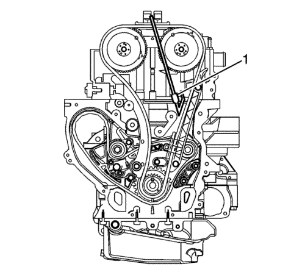
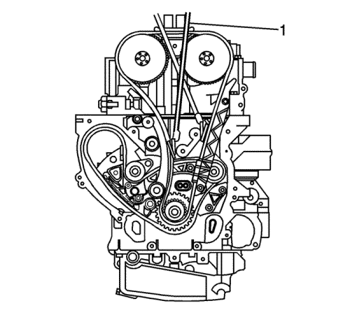

Sustitución de la culata
Herramientas especiales
| • | BO-38185 Tenazas para abrazadera de tubos flexibles |
| • | EN-45059 Medidor de ángulos |
| • | EN-48749 Juego de herramientas de retención de la cadena de distribución |
| • | EN-48953 Herramienta de bloqueo de actuadores de árbol de levas |
Si desea informarse sobre herramientas regionales equivalentes, consultar Herramientas especiales .
Procedimiento de desmontaje

- Vacíe el sistema de refrigeración. Consultar Drenaje y llenado del sistema de refrigeración .
- Retire el colector de escape. Consultar Sustitución del colector de escape : LE5 .
- Desmonte el colector de admisión. Consultar Sustitución del colector de admisión : LE5 .
- Vuelva a colocar la abrazadera del tubo flexible de purga de aire del depósito de compensación del radiador.
- Extraiga de la culata, el tubo flexible de purga de aire del depósito de compensación del radiador.
- Vuelva a colocar la abrazadera del tubo flexible de admisión del radiador usando las tenazas BO-38185.
- Extraiga el tubo flexible de entrada del radiador de la culata.
- Desconecte todos los conectores eléctricos si es necesario.
- Retire las bujías. Consultar Sustitución de la bujía
- Desmontar la tapa del árbol de levas. Consultar Sustitución de la tapa de los árboles de levas .

Nota: Si el actuador del árbol de levas de admisión se mueve independientemente del árbol de levas, esto significa que el árbol de levas no está bloqueado para el actuador. Gire el árbol de levas hacia la derecha habiendo instalado la herramienta de bloqueo y, des este modo, el árbol de levas se bloqueará para el actuador.
- En caso necesario, gire levemente el árbol de levas para instalar la herramienta de bloqueo EN-48953 (1).
Precaución: Consulte Precaución con las fijaciones en la sección Prólogo
- Monte los tornillos y la herramienta del actuador del árbol de levas y apriételos hasta 10 N·m (89 lib. pulg.).

- Quite los tornillos de la guía superior de la cadena de distribución y la guía.
- Limpie la cadena de distribución y los engranajes con disolvente.
Nota: Asegúrese de que la cadena de distribución y los actuadores de posición del árbol de levas están marcados para un montaje correcto.
- Marque los piñones del engranaje de distribución y la cadena de distribución. Es recomendable que las marcas de pintura se sitúen en la posición de las 12 en punto.
- Afloje, pero no retire los tornillos del actuador de los árboles de levas de admisión y escape.
- Desmonte la herramienta de bloqueo EN-48953.

Nota: Asegúrese de que las puntas de la herramienta de retención EN-48749 estén totalmente engranadas en la cadena de distribución. Se puede utilizar la varilla de unión de la herramienta de retención en la parte trasera de la cadena, para asegurar el engranaje de sus dientes.
- Monte la herramienta de retención EN-48749 (1) en la parte de admisión de la cadena de distribución.

- Desmonte el tensor de la cadena de distribución.

Nota: Durante la retirada o la instalación, el actuador y el árbol del levas de admisión no deberán girar.
- Monte la herramienta de retención EN-48749 (1) en la parte de escape de la cadena de distribución.

- Retire y deseche el tornillo actuador (2) del árbol de levas de escape.
- Retire el actuador del árbol de levas de escape (3) del árbol de levas de escape, quitándolo al mismo tiempo de la cadena.

- Retire y deseche el tornillo actuador (2) del árbol de levas de admisión.
- Retire el actuador del árbol de levas de admisión (3) del árbol de levas, quitándolo al mismo tiempo de la cadena de distribución.
- Marque la culata (1) en relación con la muesca del actuador del árbol de levas presente en el árbol de levas (2).

- Quite el tapón de acceso de la guía fija de la cadena de distribución.
- Quite el tornillo de la guía fija superior de la cadena de distribución.
Nota: La varilla roscada de la herramienta de fijación de la cadena de distribución puede utilizarse para ayudar a alimentar la correa de goma que rodea las guías de la cadena.
- Instale una correa de goma (1) alrededor de las guías de la cadena de distribución superior (2) para introducir las guías juntas.

- Extraiga los tornillos de la culata en el orden que se indica. Deseche los tornillos.

- Retire la culata.
- Retire la junta de la culata.
- Limpie todas las superficies de la junta.
- Utilice los siguientes pasos para limpiar la culata y las superficies del bloque motor:
| • | Utilice un rascador de cuchillas para juntas para limpiar las superficies de junta del bloque motor y la culata. No arañe o rasque ninguna de las superficies. |
| | Nota: NO utilice otro método o técnica para limpiar las superficies de junta. |
| • | Utilice una cuchilla NUEVA en la culata y una cuchilla NUEVA en el bloque motor. |
| | Nota: tenga cuidado de no cortar ni rayar la superficie de la junta. NO corte ni raye las superficies de la cámara de combustión. Es importante el tacto de la superficie de junta, no el aspecto. Una vez eliminado todo el material de junta, quedarán incisiones de la junta en la culata. Estas pequeñas incisiones se rellenarán con la NUEVA junta. |
| • | Sujete la cuchilla tan paralela a la superficie de junta como pueda. |
- Limpie cualquier suciedad y lubricación antigua de los alrededores de los orificios de perno.
Nota: NO utilice un macho de roscar para limpiar los orificios de perno de la culata.
- Limpie los orificios de los pernos con un cepillo de cerdas de nylon.
- Al limpiar los orificios de perno de culata, utilice un disolvente líquido comercial en spray y aire comprimido de una pistola de inyección con punta con el fin de alcanzar la parte inferior de los orificios.
- Si se sustituye la culata, transfiera todas las piezas que sea necesario.
Procedimiento de montaje
Nota: NO utilice ningún material de sellado.
- Monte la junta de culata.
- Monte la culata.
- Coloque los tornillos de culata NUEVOS.

- Coloque y apriete los pernos de la culata en el orden mostrado a 30 N·m (22 lib. pie) más 155 grados adicionales utilizando el medidor EN-45059.

- Monte los tornillos NUEVOS de la culata delantera y apriételos hasta 35 N·m (26 lib. pie).
- Asegúrese de que la culata (1) y el árbol de levas (2) están alineados correctamente.
- Retire la banda de goma (1) de alrededor de la parte superior de las guías de la cadena de distribución superior (2).
- Coloque el perno de guía fija en la culata y apriételo a 12 N·m (106 lib. pulg.).
- Aplique un sellante compuesto a la rosca e instale el tapón del orificio de acceso del perno de guía de cadena de distribución. Consulte Adhesivos, líquidos, lubricantes y selladores para conocer el número correcto de la pieza.
- Monte el tapón de acceso a la guía de la cadena de distribución fija y apriete el tapón a 90 N·m (59 lib. pie).
Nota: Asegúrese de que la marca de alineación realizada previamente en el actuador del árbol de levas de admisión sigue estando alineada adecuadamente con la marca de la cadena de distribución. Si la marca realizada previamente en el actuador del árbol de la base admisión no estuviese correctamente alineada, consulte Sustitución de la cadena de la distribución del árbol de levas, el piñón de cadena y el tensor .
- Monte la cadena de distribución en el actuador del árbol de levas de admisión.
- Haga coincidir la marca de alineación del actuador del árbol de levas de admisión realizada previamente con la marca de la cadena de distribución y monte el actuador en el árbol de levas.
- Instale un NUEVO tornillo actuador del árbol de levas de admisión (2) hasta que quede ajustado.
- Retire la herramienta de retención EN-48749 (1) de la parte de admisión de la cadena de distribución.
Nota: Asegúrese de que la marca de alineación realizada previamente en el actuador del árbol de levas de escape sigue estando alineada adecuadamente con la marca de la cadena de distribución. Puede que tenga que girar la leva de escape a la derecha para montar el actuador de escape.
- Monte la cadena de distribución en el actuador del árbol de levas de escape.
- Haga coincidir la marca de alineación del actuador del árbol de levas de escape realizada previamente con la marca de la cadena de distribución y monte el actuador en el árbol de levas.
- Instale un NUEVO tornillo actuador del árbol de levas de escape (2) hasta que ajuste.
- Retire la herramienta de retención EN-48749 (1) de la parte de escape de la cadena de distribución.
Nota: Si no reajusta el tensor de la cadena, habrá un exceso de tensión sobre la misma, limitando su vida útil.
- Reajuste y monte el dispositivo tensor de la cadena de distribución. Consultar Sustitución del tensor de cadena de distribución .
- Monte la herramienta de bloqueo EN-48953 (1) en los actuadores.
- Monte los tornillos de la herramienta de bloqueo del actuador del árbol de levas y apriételos a 10 N·m (89 lib. pulg.).
- Apriete el tornillo del actuador del NUEVO árbol de levas hasta 30 N·m (22 lib. pie), más 100 grados adicionales utilizando el medidor EN-45059.
- Libere el tensor aplicando un ángulo de giro hacia la izquierda de 45 N·m (33 lib. pie) al perno del compensador armónico.
- Desmonte la herramienta de bloqueo EN-48953.
- Monte los tornillos de la guía superior de la cadena de distribución y la guía. Apriete los tornillos hasta 10 N·m (89 lib. pulg.).
- Monte la tapa del árbol de levas. Consultar Sustitución de la tapa de los árboles de levas .
- Monte las bujías. Consultar Sustitución de la bujía .
- Conecte todos los conectores eléctricos si es necesario.
- Monte el tubo flexible de entrada del radiador en la culata.
- Coloque la abrazadera del tubo flexible de admisión del radiador usando las tenazas BO-38185.
- Monte el tubo flexible de purga de aire del depósito de compensación del radiador en la culata.
- Coloque la abrazadera del tubo flexible de purga de aire del depósito de compensación del radiador.
- Monte el colector de escape. Consultar Sustitución del colector de escape : LE5 .
- Monte el colector de admisión. Consultar Sustitución del colector de admisión : LE5 .
- Llene el sistema de refrigeración. Consultar Drenaje y llenado del sistema de refrigeración .
| © Copyright Chevrolet Europe. All rights reserved |